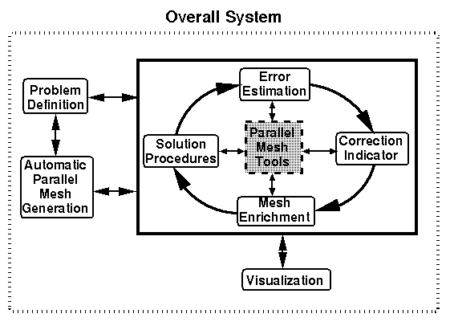
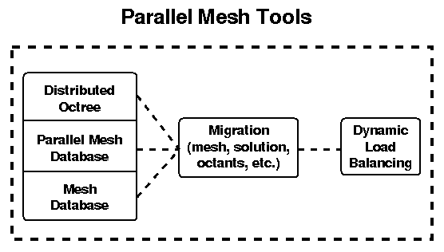

Parallel Data Structures and Load Balancing for Adaptive Finite
Element Methods
Software Support for Parallel Adaptive Finite Element Methods
In order to solve large problems in reasonable times, adaptive methods
must execute efficiently on parallel computers. Moving to a parallel
environment introduces complications such as the need to balance
processor loading, coordinate interprocessor communication, and manage
distributed data. However, a good initial partitioning of the
space-time domain is not sufficient to assure high performance
throughout the computation. Adaptive enrichment causes load
imbalances that necessitate a dynamic redistribution of data.

A geometric (CAD) modeler may be used to define the computational
domain. The SCOREC Finite Octree Automatic Mesh Generator then uses
the CAD model of the domain to create an initial mesh. Visualization
of both mesh partitionings and solution data is done using tools
including IBM's Data Explorer.
Mesh enrichment procedures perform parallel
spatial coarsening and refinement (h-refinement) using
error estimator information and enrichment thresholds.

The Parallel Mesh Tools consist of distributed
mesh and octree structures, migration routines, and dynamic load balancers.
The SCOREC Parallel Adaptive Framework integrates
all of these tools into a single environment.
(contact information here)
{kind=link}
{kind=link}